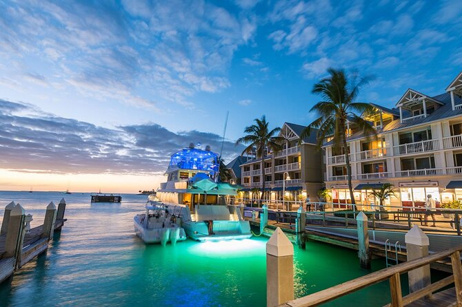

Key West is the southernmost city in the continental
United States. It is located in the Florida Keys archipelago, about 90
miles (145 km) south of Miami. The city is known for its laid-back
atmosphere, colorful history, and stunning sunsets. Key West is a popular
destination for tourists, especially scuba divers and boaters. The city is
also home to a number of historical landmarks, including the Ernest
Hemingway Home and Museum. Key West is a popular destination for fishing,
sailing, and other water sports. The city has a vibrant
arts and culture scene, with a number of galleries, museums, and theaters.
Key West is also known for its unique cuisine, which reflects the city's
diverse population. You can also
check here the news.

Top 5 Reasons to visit Key West
Stunning sunsets: Key West is known for its stunning
sunsets, which are said to be some of the best in the world. The best
place to watch the sunset is at Mallory Square, where you can enjoy the
views with hundreds of other people.
Colorful history: Key West has a colorful history that
dates back to the early 1800s. The city was once a major player in the
shipping trade and was also a popular destination for pirates. There are
many historical landmarks in Key West, including the Ernest Hemingway
Home and Museum, the Key West Lighthouse, and the Mel Fisher Maritime
Museum.
Water activities: Key West is a great place to enjoy
water activities, such as snorkeling, scuba diving, fishing, and
sailing. The waters around Key West are home to a variety of marine
life, including coral reefs, fish, and dolphins.
Unique cuisine: Key West has a unique cuisine that
reflects the city's diverse population. You can find everything from
traditional Cuban food to fresh seafood to American fare.
Laid-back atmosphere: Key West is known for its
laid-back atmosphere. The pace of life is slow and relaxed, and there's
no shortage of places to kick back and enjoy the sunshine.